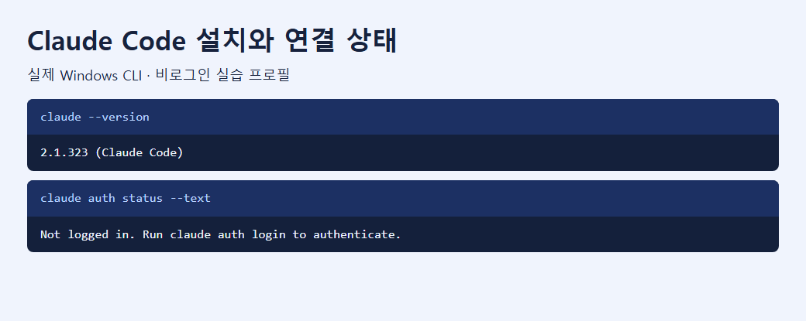

15:35–16:25 · 연결 실습
내 도구 실행과 연결
API로 읽은 원문을 내 업무 규칙에 넣고, MCP 검토 기준과 처리 결과를 CPU 모델에 전달합니다.
수업 전에 Python과 Claude Code를 설치합니다
Windows PowerShell에서 아래 명령을 실행합니다. 교재는 Python 3.12를 기준으로 안내합니다. 현재 설치된 도구는 버전 확인부터 합니다.
winget --version
winget install --id Python.Python.3.12 --exact --source winget
winget install --id Anthropic.ClaudeCode --exact --source wingetGit으로 변경 이력을 보거나 Claude Code에서 Git Bash가 필요하면 winget install --id Git.Git --exact --source winget으로 Git for Windows를 설치합니다. 그 뒤 PowerShell을 다시 열고 아래 결과에서 버전을 확인합니다.
py -3.12 --version
claude --versionWinGet을 사용할 수 없다면 교재의 실제 Python 설치 화면을 따라 설치합니다. Windows CPU 실행기와 Qwen2.5 0.5B GGUF도 수업 전에 받습니다.
연결 실습 파일과 내 입력을 준비합니다
- ZIP을 풀어
api_server.py와input.txt가 있는hug4-connections폴더를 엽니다. 탐색기 주소 표시줄에powershell을 입력합니다. input.txt에 직접 고른 공개 자료나 가상 텍스트를 400자 이내로 쓰고 UTF-8로 저장합니다. 모델에 요청할 결과를 한 문장으로 정합니다.- 수업 전에 Python 전용 환경을 준비합니다. 이 폴더에
.venv를 만들고 MCP 라이브러리를 설치합니다.py -3.12 -m venv .venv .\.venv\Scripts\python.exe -m pip install -r requirements.txt
Claude Code에 로그인하고 실제 응답을 확인합니다
- 계정 연결 상태를 봅니다.
claude auth status --text로그인이 필요하면
claude auth login을 실행해 공식 로그인 화면에서 본인 Team 계정을 선택합니다. 연결을 해제하려면claude auth logout을 실행합니다. - 내 프로젝트를 만드는 세션을 엽니다. 작업 폴더에서
claude를 실행하고, 어떤 입력을 넣어 어떤 결과를 낼지 설명합니다. - 명령형 호출로 응답을 읽습니다. 같은 공개 텍스트로 요청을 만든 뒤 결과를 JSON으로 받습니다.
$sourceText = Get-Content -LiteralPath .\input.txt -Raw -Encoding UTF8 $instruction = Read-Host '이 입력으로 만들 결과를 적으세요' $taskPrompt = $instruction + [Environment]::NewLine + $sourceText claude -p --output-format json --max-turns 2 -- "$taskPrompt"


| 명령 또는 옵션 | 쓰임 |
|---|---|
claude auth status | 계정 연결 상태를 JSON으로 반환합니다. --text는 사람이 읽을 문장으로 표시합니다. |
-p · --output-format json | 요청을 한 번 처리한 뒤 종료합니다. 출력 JSON의 result와 is_error를 읽습니다. |
--json-schema | 받을 필드와 자료형을 지정합니다. structured_output이 있는지 확인한 뒤 원문과 대조합니다. |
--max-turns 2 | 한 요청에서 에이전트가 이어서 작업할 수 있는 턴 수를 제한합니다. |
상태 검사에 연결이 표시돼도 실제 요청의 응답까지 확인합니다. 오류가 나오면 메시지와 종료 상태를 읽습니다.
만든 HTTP API를 호출합니다
api_server.py는 GET /input 요청을 받아 input.txt의 상태와 텍스트를 JSON으로 돌려줍니다. 하나의 PowerShell에 서버를 열고, 같은 폴더의 다른 PowerShell에서 요청을 보냅니다.
- 서버를 켭니다.
http://127.0.0.1:8766/input이 표시되면 내 프로그램의 연결 검증을 시작할 때까지 이 창을 열어 둡니다.py -3.12 api_server.py - 클라이언트를 실행합니다. HTTP 상태와 응답 본문의
status를 각각 봅니다.status: ok이면text에 내 입력이 들어 있습니다.py -3.12 inspect_api.py input.txt한 줄을 바꾸고 다시 호출합니다. 입력을 비웠을 때는 HTTP 200과status: empty를 확인합니다. 다음 단계 전에 입력을 복구합니다.
MCP에서 업무 원문과 검토 기준을 구분합니다
mcp_server.py는 원문을 읽는 도구와 검토 기준을 읽는 도구를 제공합니다. inspect_mcp.py가 표준 입출력으로 연결해 tools/list로 이름과 규격을 받고, tools/call로 도구를 실행합니다.
- 앞에서 준비한 Python 환경으로 검사기를 실행합니다. 검사기가 서버를 시작하므로 별도의 MCP 서버 창은 필요 없습니다.
.\.venv\Scripts\python.exe inspect_mcp.py tools/list에서read_input을 확인합니다.tools/call read_input {}로 실행한 결과의 상태와 텍스트를 HTTP API의 값과 대조합니다.review_rules.txt에 내 업무의 검토 기준을 적은 뒤tools/call read_review_rules {}의 결과와 대조합니다. 내 프로그램에서는 이 기준을 CPU 모델에 전달합니다.
Claude Code에서도 같은 서버를 등록합니다
같은 폴더에서 다음 명령으로 등록합니다. --scope local은 현재 프로젝트에서 쓰는 개인 설정을 뜻합니다.
$mcpPython = (Resolve-Path .\.venv\Scripts\python.exe).Path
$mcpServer = (Resolve-Path .\mcp_server.py).Path
claude mcp add --transport stdio --scope local hug4-input -- "$mcpPython" "$mcpServer"
claude mcp get hug4-inputclaude를 열고 /mcp에서 연결 상태를 확인합니다. read_input 도구를 인수 없이 호출해 결과를 보여달라고 요청합니다. 입력 파일과 응답을 대조합니다. 등록을 해제할 때는 claude mcp remove --scope local hug4-input을 실행합니다.
CPU 모델에 같은 입력을 보내고 결과를 비교합니다
- CPU 모델 서버를 시작합니다. API와 CPU 모델 서버 창을 열어둔 채 연결 실습 폴더에서 실행합니다.
py -3.12 run_cpu.py 입력 상태 · ok를 확인하고 만들 결과를 입력합니다. API가 반환한text와 내 요청이 모델 입력으로 쓰입니다. 모델 응답을 API·MCP에서 확인한 원문과 대조합니다.- 같은 폴더에서 기본 실행과 연결 실행을 비교합니다.
output폴더의 두 JSON에서 업무 결과가 일치하는지, 연결 결과의 초안에 틀린 내용이 있는지 확인합니다.py -3.12 my_program.py .\.venv\Scripts\python.exe my_program.py --connected
앞에서 만든 내 프로그램에 붙입니다
서버는 켜 둔 채 workflow_links.py와 local_http.py를 내가 만든 실행 파일 옆으로 복사합니다. API의 값은 기존 업무 규칙의 입력에, MCP의 검토 기준과 CPU 호출은 결과 저장 앞에 연결합니다.
공식 문서와 설치 안내
- 설치 · Windows용 Python · Python 전용 실행 환경 · Git for Windows
- Claude Code · Windows 설치 · Team 계정 연결 · CLI 명령과 옵션
- MCP · MCP 아키텍처 · Claude Code의 MCP 연결